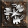
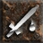
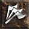
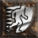
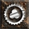
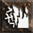
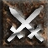

Hiim solo tier lista za S14: ocena izhaja iz najhitrejših čiščenj map. Pri buildu je najhitrejši zabeležen čas mape (večinoma S13).
 NovaSorceress · Throne of Insanity 3:35video
NovaSorceress · Throne of Insanity 3:35video Frozen OrbSorceress · Pandemonium Citadel 4:30video
Frozen OrbSorceress · Pandemonium Citadel 4:30video Cold Elemental (Arctic Blast/Hurricane)Druid · Sewers of Harrogath 3:30vodičvideo
Cold Elemental (Arctic Blast/Hurricane)Druid · Sewers of Harrogath 3:30vodičvideo Fire ElementalDruid · Torajan Jungle 4:45video
Fire ElementalDruid · Torajan Jungle 4:45video RabiesDruid · Blood Moon 13:00video
RabiesDruid · Blood Moon 13:00video Wake of FireAssassin · Throne of Insanity 3:45vodičvideo
Wake of FireAssassin · Throne of Insanity 3:45vodičvideo Blade Sentinel (Venom)Assassin · Sewers of Harrogath 3:27video
Blade Sentinel (Venom)Assassin · Sewers of Harrogath 3:27video Blades of IceAssassin · Throne of Insanity 3:45video
Blades of IceAssassin · Throne of Insanity 3:45video WarcryBarbarian · River of Blood 4:20video
WarcryBarbarian · River of Blood 4:20video
Whirlwind (2-H)Barbarian · River of Blood 3:33video Double ThrowBarbarian · River of Blood 4:35video
Double ThrowBarbarian · River of Blood 4:35video Lightning FuryAmazon · Tomb of Zoltun Kulle 2:52video
Lightning FuryAmazon · Tomb of Zoltun Kulle 2:52video Fire ArrowAmazon · Kyovoshad 4:44video
Fire ArrowAmazon · Kyovoshad 4:44video Multiple ShotAmazon · Ruined Cistern 6:30video
Multiple ShotAmazon · Ruined Cistern 6:30video Strafe (Demon Machine)Amazon · Kyovoshad 5:00video
Strafe (Demon Machine)Amazon · Kyovoshad 5:00video Poison NovaNecromancer · Ancestral Trial 2:42video
Poison NovaNecromancer · Ancestral Trial 2:42video Poison StrikeNecromancer · Canyon of Sescheron 7:00video
Poison StrikeNecromancer · Canyon of Sescheron 7:00video Teeth / BonespearNecromancer · Ancestral Trial 4:23video
Teeth / BonespearNecromancer · Ancestral Trial 4:23video
Light SacrificePaladin · Pandemonium Citadel 4:18videoPhysical SacrificePaladin · Phlegethon 7:02video Holy Fire SacrificePaladin · River of Blood 3:57video
Holy Fire SacrificePaladin · River of Blood 3:57video Charged BoltSorceressvodičvideo
Charged BoltSorceressvodičvideo Chain LightningSorceress · Throne of Insanity 4:16video
Chain LightningSorceress · Throne of Insanity 4:16video Frost NovaSorceressvideo
Frost NovaSorceressvideo Ice BarrageSorceressvideo
Ice BarrageSorceressvideo BlizzardSorceressvideo
BlizzardSorceressvideo CombustionSorceress · Throne of Insanity 2:47video
CombustionSorceress · Throne of Insanity 2:47video MeteorSorceressvideo
MeteorSorceressvideo Multishot EnchantressSorceress · Phlegethon 4:20video
Multishot EnchantressSorceress · Phlegethon 4:20video Wolf - Fire ClawsDruidvideo
Wolf - Fire ClawsDruidvideo Wolf - FuryDruid · River of Blood 6:20
Wolf - FuryDruid · River of Blood 6:20 Chain Lightning SentryAssassin · Canyon of Sescheron 5:30vodičvideo
Chain Lightning SentryAssassin · Canyon of Sescheron 5:30vodičvideo Cobra SinAssassin · Throne of Insanity 4:45video
Cobra SinAssassin · Throne of Insanity 4:45video Phoenix StrikeAssassin · Ancestral Trial 4:35video
Phoenix StrikeAssassin · Ancestral Trial 4:35video Dragon Tail (Fire Kick)Assassinvideo
Dragon Tail (Fire Kick)Assassinvideo Blade FuryAssassin · Throne of Insanity 5:20video
Blade FuryAssassin · Throne of Insanity 5:20video Mind BlastAssassinvideoPoison Blade DanceAssassinvideo
Mind BlastAssassinvideoPoison Blade DanceAssassinvideo Claws of ThunderAssassin · Canyon of Sescheron 6:40video
Claws of ThunderAssassin · Canyon of Sescheron 6:40video Death SentryAssassin
Death SentryAssassin Fists of FireAssassin · River of Blood 3:44videoWhirlwind (Dual Wield)Barbarian · Throne of Insanity 4:35video
Fists of FireAssassin · River of Blood 3:44videoWhirlwind (Dual Wield)Barbarian · Throne of Insanity 4:35video
FrenzyBarbarianvideo Split ThrowBarbarian · Sewers of Harrogath 4:20video
Split ThrowBarbarian · Sewers of Harrogath 4:20video Plague JavelinAmazon · Kyovoshad 5:30video
Plague JavelinAmazon · Kyovoshad 5:30video Cold ArrowAmazon · Sewers of Harrogath 3:53video
Cold ArrowAmazon · Sewers of Harrogath 3:53video Explosive ArrowAmazonvideo
Explosive ArrowAmazonvideo Summon ZonAmazon · Throne of Insanity 4:50video
Summon ZonAmazon · Throne of Insanity 4:50video Corpse ExplosionNecromancer · Torajan Jungle 4:13video
Corpse ExplosionNecromancer · Torajan Jungle 4:13video Elemental Summoner (Mage Skeles + Ele Revives)Necromancer · Throne of Insanity 5:00vodičvideo
Elemental Summoner (Mage Skeles + Ele Revives)Necromancer · Throne of Insanity 5:00vodičvideo Fire GolemsNecromancer · River of Blood 3:00video
Fire GolemsNecromancer · River of Blood 3:00video Dark PactNecromancer · Fall of Caldeum 3:12video
Dark PactNecromancer · Fall of Caldeum 3:12video Holy Shock - Multishot (Native Ele Aura)Paladin
Holy Shock - Multishot (Native Ele Aura)Paladin
Auradin - Charge (HOJ + 2x Dragon)Paladinvideo
Sanctuary SacrificePaladin · Ancestral Trial 4:33videoMultishot PaladinPaladin Thunder StormSorceressvideoSplit ThrowAmazonvideo
Thunder StormSorceressvideoSplit ThrowAmazonvideo TwisterDruidvideo
TwisterDruidvideo HydraSorceressvideo
HydraSorceressvideo InfernoSorceress
InfernoSorceress Wind ElementalDruid
Wind ElementalDruid Bear - ShockwaveDruid
Bear - ShockwaveDruid Armageddon autobomberDruid
Armageddon autobomberDruid Summon DruidDruidBlade Sentinel (Phys)AssassinPhysical Blade DanceAssassin
Summon DruidDruidBlade Sentinel (Phys)AssassinPhysical Blade DanceAssassin Lightning StrikeAmazon
Lightning StrikeAmazon Jab/FendAmazon
Jab/FendAmazon Green Goblin & SkeletonsNecromancer
Green Goblin & SkeletonsNecromancer Blood GolemNecromancer
Blood GolemNecromancer HammerdinPaladinvideo
HammerdinPaladinvideo
Vengeance 2H ZenithPaladinVengeance 1HPaladin · Sanctuary of Sin 35:00Ele - Charge (Native Ele Aura)Paladin
Physical ZealPaladinPhysical Charge (2-H)PaladinHiim bossing lista: kako lahko build ubije bossa. T0 je osnovna, T2 najtežja različica. Buildi brez povezave niso na Hiim mapping listi, zato zanje nimamo strani.
MeteorSorceress · T2: lahkovideoHydraSorceress · T2: lahkovideoBlizzardSorceress · T2: srednjevideoSummon DruidDruid · T2: srednjeRabiesDruid · T2: srednjevideoMaulDruid · T2: lahkoWolf - FuryDruid · T2: lahkoWake of FireAssassin · T2: lahkovodičvideoBlade Sentinel (Phys)Assassin · T2: lahkoLight TrapsAssassin · T2: srednjeBerserkBarbarian · T2: lahkoPlague JavelinAmazon · T2: lahkovideoJab/FendAmazon · T2: lahkoDesecrateNecromancer · T2: lahkoBlood GolemNecromancer · T2: lahko Holy Bolt / FOHPaladin · T2: srednjevideoSummon ZonAmazonvideoSummonerDruidRed Portal FarmerSorceress · T2: težkoChain LightningSorceress · T2: težkovideoFire ElementalDruid · T2: srednjevideoFists of FireAssassin · T2: srednjevideo
Holy Bolt / FOHPaladin · T2: srednjevideoSummon ZonAmazonvideoSummonerDruidRed Portal FarmerSorceress · T2: težkoChain LightningSorceress · T2: težkovideoFire ElementalDruid · T2: srednjevideoFists of FireAssassin · T2: srednjevideo Mind BlastAssassin · T2: srednjeImmolation ArrowAmazon · T2: srednjePoison StrikeNecromancer · T2: težkovideoWind ElementalDruidBone SpearNecromancerVengeance 1HPaladinMeteorSorceress · T0: lahkovideoHydraSorceress · T0: lahkovideoMaulDruid · T0: lahkoWolf - FuryDruid · T0: lahkoWake of FireAssassin · T0: lahkovodičvideoBlade Sentinel (Phys)Assassin · T0: lahkoBerserkBarbarian · T0: lahkoPlague JavelinAmazon · T0: lahkovideoJab/FendAmazon · T0: lahkoDesecrateNecromancer · T0: lahkoBlood GolemNecromancer · T0: lahkoBlizzardSorceress · T0: lahkovideoSummon DruidDruid · T0: lahkoRabiesDruid · T0: lahkovideoFire ElementalDruid · T0: srednjevideoLight TrapsAssassin · T0: lahkoFists of FireAssassin · T0: srednjevideoMind BlastAssassin · T0: srednjeWhirlwind (Dual Wield)Barbarian · T0: težkovideoImmolation ArrowAmazon · T0: srednjePhysical ChargerPaladinHoly Bolt / FOHPaladin · T0: lahkovideoRabiesDruid · T2: lahkovideoMaulDruid · T2: lahkoBlade Sentinel (Phys)Assassin · T2: lahkoDouble ThrowBarbarian · T2: lahkovideoBerserkBarbarian · T2: lahkoPlague JavelinAmazon · T2: lahkovideoJab/FendAmazon · T2: lahkoPhysical ChargerPaladin · T2: lahkoRabiesDruid · T0: lahkovideoMaulDruid · T0: lahkoBlade Sentinel (Phys)Assassin · T0: lahkoDouble ThrowBarbarian · T0: lahkovideoBerserkBarbarian · T0: lahkoPlague JavelinAmazon · T0: lahkovideoJab/FendAmazon · T0: lahkoPhysical ChargerPaladin · T0: lahkoMultishot EnchantressSorceress · T2: lahkovideoMaulDruid · T2: lahkoWolf - FuryDruid · T2: lahkoBlade Sentinel (Phys)Assassin · T2: lahkoCobra SinAssassin · T2: lahkovideoBerserkBarbarian · T2: lahkoWhirlwind (Dual Wield)Barbarian · T2: lahkovideoJab/FendAmazon · T2: lahkoImmolation ArrowAmazon · T2: lahkoSmiterPaladin · T2: lahkoMultishot EnchantressSorceress · T0: lahkovideoMaulDruid · T0: lahkoWolf - FuryDruid · T0: lahkoBlade Sentinel (Phys)Assassin · T0: lahkoCobra SinAssassin · T0: lahkovideoBerserkBarbarian · T0: lahkoWhirlwind (Dual Wield)Barbarian · T0: lahkovideoJab/FendAmazon · T0: lahkoImmolation ArrowAmazon · T0: lahkoSmiterPaladin · T0: lahko
Mind BlastAssassin · T2: srednjeImmolation ArrowAmazon · T2: srednjePoison StrikeNecromancer · T2: težkovideoWind ElementalDruidBone SpearNecromancerVengeance 1HPaladinMeteorSorceress · T0: lahkovideoHydraSorceress · T0: lahkovideoMaulDruid · T0: lahkoWolf - FuryDruid · T0: lahkoWake of FireAssassin · T0: lahkovodičvideoBlade Sentinel (Phys)Assassin · T0: lahkoBerserkBarbarian · T0: lahkoPlague JavelinAmazon · T0: lahkovideoJab/FendAmazon · T0: lahkoDesecrateNecromancer · T0: lahkoBlood GolemNecromancer · T0: lahkoBlizzardSorceress · T0: lahkovideoSummon DruidDruid · T0: lahkoRabiesDruid · T0: lahkovideoFire ElementalDruid · T0: srednjevideoLight TrapsAssassin · T0: lahkoFists of FireAssassin · T0: srednjevideoMind BlastAssassin · T0: srednjeWhirlwind (Dual Wield)Barbarian · T0: težkovideoImmolation ArrowAmazon · T0: srednjePhysical ChargerPaladinHoly Bolt / FOHPaladin · T0: lahkovideoRabiesDruid · T2: lahkovideoMaulDruid · T2: lahkoBlade Sentinel (Phys)Assassin · T2: lahkoDouble ThrowBarbarian · T2: lahkovideoBerserkBarbarian · T2: lahkoPlague JavelinAmazon · T2: lahkovideoJab/FendAmazon · T2: lahkoPhysical ChargerPaladin · T2: lahkoRabiesDruid · T0: lahkovideoMaulDruid · T0: lahkoBlade Sentinel (Phys)Assassin · T0: lahkoDouble ThrowBarbarian · T0: lahkovideoBerserkBarbarian · T0: lahkoPlague JavelinAmazon · T0: lahkovideoJab/FendAmazon · T0: lahkoPhysical ChargerPaladin · T0: lahkoMultishot EnchantressSorceress · T2: lahkovideoMaulDruid · T2: lahkoWolf - FuryDruid · T2: lahkoBlade Sentinel (Phys)Assassin · T2: lahkoCobra SinAssassin · T2: lahkovideoBerserkBarbarian · T2: lahkoWhirlwind (Dual Wield)Barbarian · T2: lahkovideoJab/FendAmazon · T2: lahkoImmolation ArrowAmazon · T2: lahkoSmiterPaladin · T2: lahkoMultishot EnchantressSorceress · T0: lahkovideoMaulDruid · T0: lahkoWolf - FuryDruid · T0: lahkoBlade Sentinel (Phys)Assassin · T0: lahkoCobra SinAssassin · T0: lahkovideoBerserkBarbarian · T0: lahkoWhirlwind (Dual Wield)Barbarian · T0: lahkovideoJab/FendAmazon · T0: lahkoImmolation ArrowAmazon · T0: lahkoSmiterPaladin · T0: lahkoDarkHumility priporoča
- Double Throw
- Split Throw
- Wolf Barbarian
- Berserk
- Whirlwind
- Bear/Zeal/Jab Barbarian
- Frenzy
- Leap Attack
- 2-H Physical Charge
- FOH/Holy Bolt
- Vengeance
- Elemental Werebear
- 1-H Physical Zeal
- Smite
DarkHumility priporoča
- Berserk
- Double Throw
- Wolf Barbarian
- Bear/Zeal/Jab Barbarian
- Frenzy
- Whirlwind
- Bash
- Split Throw
- Leap Attack
- 2-H Physical Charge
- Elemental Werebear
- 1-H Physical Zeal
- Smite
DarkHumility priporoča
- Whirlwind
- Bear/Zeal/Jab Barbarian
- Frenzy
- Split Throw
- Wolf Barbarian
- Double Throw
- Berserk
- Leap Attack
- Vengeance
- FOH/Holy Bolt
- Smite
- 2-H Physical Charge
- 1-H Physical Zeal
- Elemental Werebear
Hiim za Uber Tristram nima liste, zato je tu samo DarkHumilityjevo priporočilo.
DarkHumility priporoča
- Hydra
- Meteor
- Blizzard/Ice Bolt
- Inferno/Fire Wall
- Fire Bolt/Ball
- Lightning
- Werebear (Cold Enchant - Odium)
- Berserk
- Frenzy
- Bear/Zeal/Jab Barbarian
- Whirlwind
- Wolf Barbarian
- Split Throw
- Double Throw
- Leap Attack
- Concentrate
- Bash
- Jab/Fend
- Summon
- Lightning Bolt/Lightning Fury
- Immolation Arrow
- Cold Arrow/Ice Arrow
- Charged Strike
Hiim starter lista
Buildi, s katerimi Hiim priporoča začeti sezono s skromno opremo, in kaj z njimi farmaš.
Blade Sentinel (Venom)Assassin · Chaos Sanctuary, zgodnje mape, ključi, Uber TristramvideoWarcryBarbarian · Travincal, Chaos Sanctuary, zgodnje mape, ključivideoWhirlwind (2-H)Barbarian · Chaos Sanctuary, zgodnje mapevideoDouble ThrowBarbarian · Chaos Sanctuary, zgodnje mapevideoTeeth / BonespearNecromancer · Chaos Sanctuary, zgodnje mapevideoChain LightningSorceress · ArcanevideoIce BarrageSorceress · Chaos Sanctuary, zgodnje mape, ključivideoBlizzardSorceressvideoMeteorSorceress · Chaos Sanctuary, zgodnje mape, ključi, Uber TristramvideoChain Lightning SentryAssassin · Arcane, zgodnje mapevodičvideoWhirlwind (Dual Wield)Barbarian · Chaos Sanctuary, zgodnje mapevideoDark PactNecromancer · Chaos Sanctuary, zgodnje mapevideoWind ElementalDruid · Chaos Sanctuary, zgodnje mapeBear - ShockwaveDruid · Travincal, Chaos Sanctuary, zgodnje mapeSummon DruidDruid · Travincal, Chaos Sanctuary, zgodnje mape, ključi, Uber TristramBlade Sentinel (Phys)Assassin · Chaos Sanctuary, zgodnje mape, ključi, Uber TristramLightning StrikeAmazon · Arcane, Chaos Sanctuary, zgodnje mapeHammerdinPaladin · Chaos Sanctuary, zgodnje mapevideoVengeance 2H ZenithPaladin · Chaos Sanctuary, zgodnje mapeVengeance 1HPaladin · Chaos Sanctuary, zgodnje mape TravbarbBarbarian · TravincalBlessed Hammer ProcsPaladin · Chaos Sanctuary, zgodnje mape
TravbarbBarbarian · TravincalBlessed Hammer ProcsPaladin · Chaos Sanctuary, zgodnje mape FirewallSorceress · AndarielMind BlastAssassin · Chaos Sanctuary, zgodnje mape, ključi, Uber Tristram
FirewallSorceress · AndarielMind BlastAssassin · Chaos Sanctuary, zgodnje mape, ključi, Uber Tristram Pure Summon (Decoy & Valk)Amazon · Chaos Sanctuary, zgodnje mape, ključi, Uber Tristram
Pure Summon (Decoy & Valk)Amazon · Chaos Sanctuary, zgodnje mape, ključi, Uber Tristram Magic ArrowAmazon · Chaos Sanctuary, corrupted zone, Arcane
Magic ArrowAmazon · Chaos Sanctuary, corrupted zone, Arcane Clay GolemsNecromancer · Travincal, Chaos Sanctuary, zgodnje mape, ključi, Uber TristramHoly Bolt / FOHPaladin · Chaos Sanctuary, zgodnje mape, ključi, Uber TristramvideoSmiterPaladin · ključi, Uber Tristram
Clay GolemsNecromancer · Travincal, Chaos Sanctuary, zgodnje mape, ključi, Uber TristramHoly Bolt / FOHPaladin · Chaos Sanctuary, zgodnje mape, ključi, Uber TristramvideoSmiterPaladin · ključi, Uber TristramBudget in day 1 video vodiči
Buildi, pri katerih imamo povzetek video vodiča z budget, day 1 ali day 2–5 opremo. Povzetek je pri buildu pod »Iz videa«.
Frozen OrbSorceress · JuxtAPoservideoWake of FireAssassin · JuxtAPoservodičvideoBlades of IceAssassin · philanthropy777videoWarcryBarbarian · philanthropy777videoMultiple ShotAmazon · philanthropy777videoStrafe (Demon Machine)Amazon · philanthropy777videoTeeth / BonespearNecromancer · philanthropy777videoChain LightningSorceress · JuxtAPoservideoMeteorSorceress · philanthropy777videoMultishot EnchantressSorceress · JuxtAPoservideoWolf - Fire ClawsDruid · philanthropy777videoChain Lightning SentryAssassin · JuxtAPoser, philanthropy777vodičvideoPoison Blade DanceAssassin · philanthropy777videoSplit ThrowBarbarian · JuxtAPoservideoCorpse ExplosionNecromancer · philanthropy777videoSplit ThrowAmazon · JuxtAPoservideoTwisterDruid · JuxtAPoser, philanthropy777videoBow PaladinPaladin · JuxtAPoservideoNajdražja runa v najcenejšem planerju
Za vsak build vzamemo Hiimov začetni ali day 2–5 planer z najcenejšimi runami za lika in pokažemo najdražjo runo v njem (runewordi, socketi in crafti). Če merc v istem planerju rabi dražje rune (npr. Infinity), je to napisano posebej, prav tako število unique in set kosov na liku. Cene uniquov niso upoštevane, ker se tržne cene oblikujejo šele po začetku sezone.
HammerdinPaladin · brez run, merc Sol, 3 unique/set (Day 2-5 Najs Set)videoMind BlastAssassin · brez run, merc Amn, 4 unique/set (Day 2-5)videoSummon DruidDruid · brez run, merc Lum, 7 unique/set (Mid: Athena's Wrath + Vipermagi)Blades of IceAssassin · Tir, merc Amn, 7 unique/set (Day 2-5)videoMagic ArrowAmazon · Ort (Leveling Guide)Blessed Hammer ProcsPaladin · Amn, merc Sol (Starter)RabiesDruid · Amn, 9 unique/set (Pre-Endgame)videoBlood GolemNecromancer · Sol (Day 1)Holy Bolt / FOHPaladin · Sol (Planner)videoTwisterDruid · Shael, merc Ber, 5 unique/set (Day 2-5)videoPoison StrikeNecromancer · Shael, 9 unique/set (Starter: Jade Tan Do + Rhyme)videoChain Lightning SentryAssassin · Hel (Day 1)vodičvideoWarcryBarbarian · Hel (Base Planner)video FissureDruid · Lum, merc Ber (Day 1)Dark PactNecromancer · Lum, 1 unique/set (Base Planner)videoFirewallSorceress · Lum, 1 unique/set (Base Planner)Ice BarrageSorceress · Lum, 2 unique/set (Base Planner)videoClay GolemsNecromancer · Lum, 3 unique/set (Base Planner)MeteorSorceress · Lum, merc Ko, 5 unique/set (Starter Gear)videoChain LightningSorceress · Lum, 6 unique/set (Starter: Memory + Spirit Shroud)videoTeeth / BonespearNecromancer · Lum, 7 unique/set (Starter Build Planner)videoCorpse ExplosionNecromancer · Lum, 7 unique/set (Starter: White + Splendor)videoPure Summon (Decoy & Valk)Amazon · Ko (Base Planner)Summon ZonAmazon · Ko, 4 unique/set (Starter: Spirit + Rhyme)videoWolf - Fire ClawsDruid · Ko, 8 unique/set (Day 2-5)videoDouble ThrowBarbarian · Ko, 9 unique/set (Starter: Lacerators)videoFrenzyBarbarian · Ko, 9 unique/set (Starter Build Planner)videoMultiple ShotAmazon · Fal, 8 unique/set (Day 2-5)videoStrafe (Demon Machine)Amazon · Fal, 9 unique/set (S14 Day 2-5)videoPhoenix StrikeAssassin · Um, 6 unique/set (Starter Build Planner)videoBlade Sentinel (Venom)Assassin · Mal, 2 unique/set (Base Planner)videoBlade Sentinel (Phys)Assassin · Mal, 2 unique/set (Base Planner)
FissureDruid · Lum, merc Ber (Day 1)Dark PactNecromancer · Lum, 1 unique/set (Base Planner)videoFirewallSorceress · Lum, 1 unique/set (Base Planner)Ice BarrageSorceress · Lum, 2 unique/set (Base Planner)videoClay GolemsNecromancer · Lum, 3 unique/set (Base Planner)MeteorSorceress · Lum, merc Ko, 5 unique/set (Starter Gear)videoChain LightningSorceress · Lum, 6 unique/set (Starter: Memory + Spirit Shroud)videoTeeth / BonespearNecromancer · Lum, 7 unique/set (Starter Build Planner)videoCorpse ExplosionNecromancer · Lum, 7 unique/set (Starter: White + Splendor)videoPure Summon (Decoy & Valk)Amazon · Ko (Base Planner)Summon ZonAmazon · Ko, 4 unique/set (Starter: Spirit + Rhyme)videoWolf - Fire ClawsDruid · Ko, 8 unique/set (Day 2-5)videoDouble ThrowBarbarian · Ko, 9 unique/set (Starter: Lacerators)videoFrenzyBarbarian · Ko, 9 unique/set (Starter Build Planner)videoMultiple ShotAmazon · Fal, 8 unique/set (Day 2-5)videoStrafe (Demon Machine)Amazon · Fal, 9 unique/set (S14 Day 2-5)videoPhoenix StrikeAssassin · Um, 6 unique/set (Starter Build Planner)videoBlade Sentinel (Venom)Assassin · Mal, 2 unique/set (Base Planner)videoBlade Sentinel (Phys)Assassin · Mal, 2 unique/set (Base Planner)Samo endgame planer
Top, Good in Decent buildi, za katere Hiim nima začetnega planerja, zato cene po runah ne moremo oceniti.
Lightning FuryAmazonvideoFire ArrowAmazonvideoPlague JavelinAmazonvideoCold ArrowAmazonvideoExplosive ArrowAmazonvideoSplit ThrowAmazonvideoLightning StrikeAmazonJab/FendAmazonWake of FireAssassinvodičvideoCobra SinAssassinvideoDragon Tail (Fire Kick)AssassinvideoBlade FuryAssassinvideoPoison Blade DanceAssassinvideoClaws of ThunderAssassinvideoDeath SentryAssassinFists of FireAssassinvideoPhysical Blade DanceAssassinWhirlwind (2-H)BarbarianvideoWhirlwind (Dual Wield)BarbarianvideoSplit ThrowBarbarianvideoCold Elemental (Arctic Blast/Hurricane)DruidvodičvideoFire ElementalDruidvideoWolf - FuryDruidWind ElementalDruidBear - ShockwaveDruidArmageddon autobomberDruidPoison NovaNecromancervideoElemental Summoner (Mage Skeles + Ele Revives)NecromancervodičvideoFire GolemsNecromancervideoGreen Goblin & SkeletonsNecromancerLight SacrificePaladinvideoPhysical SacrificePaladinvideoHoly Fire SacrificePaladinvideoHoly Shock - Multishot (Native Ele Aura)PaladinAuradin - Charge (HOJ + 2x Dragon)PaladinvideoSanctuary SacrificePaladinvideoMultishot PaladinPaladinVengeance 2H ZenithPaladinVengeance 1HPaladinEle - Charge (Native Ele Aura)PaladinPhysical ZealPaladinPhysical Charge (2-H)PaladinNovaSorceressvideoFrozen OrbSorceressvideoCharged BoltSorceressvodičvideoFrost NovaSorceressvideoBlizzardSorceressvideoCombustionSorceressvideoMultishot EnchantressSorceressvideoHydraSorceressvideoInfernoSorceressThunder StormSorceressvideoDarkHumility: budget ocena
Oznaka »Budget« iz DarkHumilityjeve tier liste: kako dobro build mapa s poceni opremo. Ob imenu je njegova ocena za late game.
Fist of the HeavensPaladin · DH SvideoFire GolemsNecromancer · DH A+videoMagic Arrow (Asylum)Amazon · DH B-Blood GolemsNecromancer · DH B-Pure Decoy Summon (Loyalty)Amazon · DH DElemental Summoner (Mage Skeles + Ele Revives)Necromancer · DH DvodičvideoClay GolemsNecromancer · DH D-Summon (Wolf Focus)Druid · DH F+Wolf - RabiesDruid · DH S+videoWake of FireAssassin · DH S+vodičvideoPhoenix StrikeAssassin · DH S-videoBlizzardSorceress · DH A+videoCold ArrowAmazon · DH A+videoFire ArrowAmazon · DH A+videoPoison Blade SentinelAssassin · DH AvideoMind Blast (1-2x Whispering Mirage - Summon Sin)Assassin · DH AvideoWhirlwind (2-H)Barbarian · DH AvideoDouble ThrowBarbarian · DH AvideoWar CryBarbarian · DH AvideoExploding ArrowAmazon · DH AvideoCorpse ExplosionNecromancer · DH AvideoTeethNecromancer · DH A-videoBone SpearNecromancer · DH A-videoPhysical Skele Summon (Brand + Tombsong)Necromancer · DH A-HydraSorceress · DH B+videoPhysical Blade SentinelAssassin · DH B+Sanctuary Sacrifice (Native Aura) (Redeemer)Paladin · DH B+videoTwisterDruid · DH BvideoChain Lightning SentryAssassin · DH BvodičvideoFreezing ArrowAmazon · DH BHybrid Strafe/Valkyrie (Ebonbane)Amazon · DH BvideoBear - Shock WaveDruid · DH B-Blade DanceAssassin · DH B-videoMeteorSorceress · DH CvideoTornadoDruid · DH CSummon (4x Bears Only - Denmother)Druid · DH CInfernoSorceress · DH C-Principle Strafe (Endlesshail)Paladin · DH C-videoHoly BoltPaladin · DH D+videoVolcanoDruid · DH S+videoClaws of ThunderAssassin · DH S+videoBlades of IceAssassin · DH S+videoDesecrateNecromancer · DH S+videoPoison StrikeNecromancer · DH S+videoPhysical Sacrifice (1-H) (Schaeffer's)Paladin · DH S+videoFire Enchant - Exploding Arrow (Demon Machine)Sorceress · DH SPhysical Sacrifice (2-H) (Leoric's)Paladin · DH SvideoFrozen OrbSorceress · DH S-videoCobra StrikeAssassin · DH S-videoFists of FireAssassin · DH S-videoPlague JavelinAmazon · DH S-videoChain LightningSorceress · DH A+videoIce BarrageSorceress · DH A+videoArctic Blast/HurricaneDruid · DH A+vodičvideoLightning FuryAmazon · DH A+videoHoly Freeze Sacrifice (Native Aura)Paladin · DH A+CombustionSorceress · DH AvideoBlade FuryAssassin · DH AvideoMultiple Shot (Windforce/High Min Dmg Bow)Amazon · DH AvideoStrafe (Demon Machine)Amazon · DH AvideoVengeance (Azure/Lightsabre/Famine PB)Paladin · DH AWolf - Fire ClawsDruid · DH A-videoWhirlwind (2x 1-H)Barbarian · DH A-videoBlessed Hammer (Hdin)Paladin · DH A-videoHoly Fire Sacrifice (Items OR Native)Paladin · DH A-video Poison Creeper (Worm Summoning)Druid · DH B+videoSplit ThrowBarbarian · DH BvideoDark PactNecromancer · DH BvideoSacrifice Hammer Proc (Akarat's)Paladin · DH BPhysical Zeal (1-H)Paladin · DH BMolten BoulderDruid · DH B-FrenzyBarbarian · DH B-videoSanctuary Charge (Native Aura) (Redeemer)Paladin · DH B-Lightning StrikeAmazon · DH C+Bone Wall (Amp + ATD)Necromancer · DH C+Physical Zeal (2-H)Paladin · DH C+Power StrikeAmazon · DH CVenom Bowsin - Multiple Shot (Widowmaker)Assassin · DH C-Split Throw (Jealousy)Amazon · DH C-videoThorns Sacrifice (Silence + Bramble)Paladin · DH C-Wolf - Twister Proc Fury (Windhammer + 2x Carrions)Druid · DH DBow Barb - Multiple Shot (Widowmaker)Barbarian · DH F+ConfuseNecromancer · DH F---
Poison Creeper (Worm Summoning)Druid · DH B+videoSplit ThrowBarbarian · DH BvideoDark PactNecromancer · DH BvideoSacrifice Hammer Proc (Akarat's)Paladin · DH BPhysical Zeal (1-H)Paladin · DH BMolten BoulderDruid · DH B-FrenzyBarbarian · DH B-videoSanctuary Charge (Native Aura) (Redeemer)Paladin · DH B-Lightning StrikeAmazon · DH C+Bone Wall (Amp + ATD)Necromancer · DH C+Physical Zeal (2-H)Paladin · DH C+Power StrikeAmazon · DH CVenom Bowsin - Multiple Shot (Widowmaker)Assassin · DH C-Split Throw (Jealousy)Amazon · DH C-videoThorns Sacrifice (Silence + Bramble)Paladin · DH C-Wolf - Twister Proc Fury (Windhammer + 2x Carrions)Druid · DH DBow Barb - Multiple Shot (Widowmaker)Barbarian · DH F+ConfuseNecromancer · DH F---DarkHumility: priporočeni starterji
Njegov vrstni red starterjev po razredih in najboljših 10 skupaj.
- War Cry/Support
- Double Throw - Deep Wounds
- Split Throw - Deep Wounds
- Whirlwind - Deep Wounds
- Frenzy
- Leap Attack - Deep Wounds
Hiim group tier liste za igro v skupini (do 8 igralcev). Fizične in elementne skupine imajo ločeni listi, ker si delijo aure in curse za svojo vrsto škode.
Fizične skupine
Blade FuryAssassinvideoDragon Tail (Fire Kick)AssassinvideoDouble ThrowBarbarianvideoGrimward + Big ShoutsBarbarianStatic Leap Attack 1H + Twilight + Big ShoutsBarbarianStrafe (Demon Machine)AmazonvideoPure Summon (Decoy & Valk)AmazonGreen Goblin & SkeletonsNecromancerGreen Goblin & SkeletonsNecromancerOnly Phys CursesNecromancerSkeleton Summons & Amp HybridNecromancerPhysical SacrificePaladinvideoMultishot EnchantressSorceressvideoSummon DruidDruidSummon (Spirit Wolf)DruidDragon Tail (Fire Kick)AssassinvideoPhysical Blade DanceAssassinWhirlwind (Dual Wield)BarbarianvideoLeap Attack (No shouts)BarbarianMultiple ShotAmazonvideoHoly Nova + Aura holderPaladinPhysical Charge (2-H)PaladinGreen Goblin & SkeletonsNecromancerWolf - FuryDruidBear - Multiple Shot Maul (Demon Machine)DruidFendAmazonSummoner - Pure Revive (Eternity & Sacred totem)NecromancerElementne skupine
Mind BlastAssassinvideoPhoenix StrikeAssassinvideoDragon Tail (Fire Kick)AssassinvideoStatic Leap Attack 2H + Big ShoutsBarbarianStatic Leap Attack 1H + Big ShoutsBarbarianStatic Leap Attack 1H + Twilight + Big ShoutsBarbarianLightning FuryAmazonvideoHoly Nova + Aura Big ConvictionPaladinChain LightningSorceressvideoHydraSorceressvideoSummon (Raven)DruidChain Lightning SentryAssassinvodičvideoWake of FireAssassinvodičvideoMind BlastAssassinvideoCold ArrowAmazonvideoFire ArrowAmazonvideoExplosive ArrowAmazonvideoFire GolemsNecromancervideoCurse NecNecromancerVengeance 1HPaladinHoly Shock - Multishot (Native Ele Aura)PaladinHoly Freeze - Charge (Doom + Shattered Wall)PaladinHoly Fire SacrificePaladinvideoFrozen OrbSorceressvideoIce BarrageSorceressvideoBlizzardSorceressvideoMultishot EnchantressSorceressvideoFire ElementalDruidvideoWolf - Fire ClawsDruidvideoLightning StrikeAmazonPower StrikeAmazonFreezing ArrowAmazonHoly Nova + Big Res AuraPaladinVengeance 1HPaladinSplošni (generalist)
Hiim jih ne razvršča po tierih: buildi, ki koristijo vsaki skupini (aure, curse, podpora).
DarkHumilityjeva S14 late game tier lista (stanje 2026-10-21). Merilo je število pošasti na minuto v najboljših T3 mapah za build (prilagojeno za gostoto), s skoraj vrhunsko opremo brez veliko korupcij in z optimalno igro. S je najboljše, F najslabše; + in − sta zgornji in spodnji del tiera. Ime builda vodi na našo stran, kjer ga imamo.
| Tier | Build | Fortified | Budget | HC | T1–T2 | Vodič |
|---|---|---|---|---|---|---|
| S++ | Holy Shock Sacrifice (Native Aura)Paladin · Offensive Tree | ❌ | ✔ | ✔ | ✔ | video S13 |
| S+ | Blades of IceAssassin · Martial Arts Tree | ✔✔ | ✔ | ✔✔ | ✔ | video S10 |
| S+ | Claws of ThunderAssassin · Martial Arts Tree | ✔✔ | ✔ | ✔ | ✔ | video S11 |
| S+ | Wake of FireAssassin · Traps Tree | ❌ | ✔✔ | ✔✔ | ✔ | video S9 |
| S+ | VolcanoDruid · Elemental Tree | ✔ | ✔ | ✔ | ✔ | video S10 |
| S+ | Wolf - RabiesDruid · Shape Shifting Tree | ❌ | ✔✔ | ✔✔ | ❌ | |
| S+ | DesecrateNecromancer · Poison and Bone Tree | ✔✔ | ✔ | ✔ | ✔ | |
| S+ | Poison StrikeNecromancer · Poison and Bone Tree | ✔✔ | ✔ | ✔✔ | ✔ | video S13 |
| S+ | Physical Sacrifice (1-H) (Schaeffer's)Paladin · Combat Tree | ❌ | ✔ | ✔✔ | ✔ | video S13 |
| S | Fist of the HeavensPaladin · Combat Tree | ❌ | ✔✔✔ | ✔✔ | ✔ | video S14 |
| S | Physical Sacrifice (2-H) (Leoric's)Paladin · Combat Tree | ❌ | ✔ | ✔ | ✔ | |
| S | Fire Enchant - Exploding Arrow (Demon Machine)Sorceress · Fire Tree | ✔✔ | ✔ | ✔ | ✔✔ | video S12 |
| S- | Plague JavelinAmazon · Javelin and Spear Tree | ✔✔ | ✔ | ✔✔ | ✔ | video S13 |
| S- | Cobra StrikeAssassin · Martial Arts Tree | ✔✔ | ✔ | ✔✔ | ✔ | video S12 |
| S- | Dragon TailAssassin · Martial Arts Tree | ✔✔✔ | ❌ | ✔ | ✔ | video S14 |
| S- | Fists of FireAssassin · Martial Arts Tree | ✔✔ | ✔ | ✔ | ✔ | video S10 |
| S- | Phoenix StrikeAssassin · Martial Arts Tree | ✔✔ | ✔✔ | ✔ | ✔ | video S11 |
| S- | Frost NovaSorceress · Cold Tree | ❌ | ❌ | ✔✔ | ✔✔ | video S10 |
| S- | Frozen OrbSorceress · Cold Tree | ✔ | ✔ | ✔ | ✔ | |
| S- | NovaSorceress · Lightning Tree | ❌ | ❌ | ✔ | ✔✔ | |
| A+ | Cold ArrowAmazon · Bow and Crossbow Tree | ✔ | ✔✔ | ✔ | ✔ | video S13 |
| A+ | Fire ArrowAmazon · Bow and Crossbow Tree | ✔✔ | ✔✔ | ✔ | ✔ | |
| A+ | Lightning FuryAmazon · Javelin and Spear Tree | ❌ | ✔ | ✔✔ | ✔ | video S13 |
| A+ | Arctic Blast/HurricaneDruid · Elemental Tree | ✔ | ✔ | ✔✔ | ✔ | video S12 |
| A+ | Fire GolemsNecromancer · Summoning Tree | ❌ | ✔✔✔ | ✔✔ | ✔✔ | video S12 |
| A+ | Poison NovaNecromancer · Poison and Bone Tree | ❌ | ❌ | ✔ | ✔✔✔ | video S7 |
| A+ | Holy Freeze Sacrifice (Native Aura)Paladin · Offensive Tree | ❌ | ✔ | ✔ | ✔ | video S11 |
| A+ | BlizzardSorceress · Cold Tree | ✔✔ | ✔✔ | ✔ | ✔ | video S11 |
| A+ | Chain LightningSorceress · Lightning Tree | ✔✔ | ✔ | ✔ | ✔✔ | video S13 |
| A+ | Ice BarrageSorceress · Cold Tree | ✔ | ✔ | ✔ | ✔ | video S8 |
| A | Exploding ArrowAmazon · Bow and Crossbow Tree | ✔✔ | ✔✔ | ✔ | ✔ | |
| A | Multiple Shot (Windforce/High Min Dmg Bow)Amazon · Bow and Crossbow Tree | ❌ | ✔ | ✔ | ✔✔ | video S14 |
| A | Strafe (Demon Machine)Amazon · Bow and Crossbow Tree | ✔✔ | ✔ | ✔ | ✔ | video S11 |
| A | Blade FuryAssassin · Traps Tree | ❌ | ✔ | ✔ | ✔ | video S13 |
| A | Mind Blast (1-2x Whispering Mirage - Summon Sin)Assassin · Shadow Disciplines Tree | ✔ | ✔✔ | ✔ | ✔ | video S14 |
| A | Poison Blade SentinelAssassin · Traps Tree | ✔✔ | ✔✔ | ✔ | ✔ | |
| A | Double ThrowBarbarian · Combat Tree | ✔✔ | ✔✔ | ✔✔ | ✔✔ | |
| A | Magic Whirlwind (2x Asylum)Barbarian · Combat Tree | ❌ | ❌ | ✔✔ | ✔ | |
| A | War CryBarbarian · Warcries Tree | ✔ | ✔✔ | ✔✔ | ✔ | video S11 |
| A | Whirlwind (2-H)Barbarian · Combat Tree | ❌ | ✔✔ | ✔✔ | ✔ | video S13 |
| A | Corpse ExplosionNecromancer · Poison and Bone Tree | ❌ | ✔✔ | ✔✔ | ✔ | video S12 |
| A | Vengeance (Azure/Lightsabre/Famine PB)Paladin · Combat Tree | ✔ | ✔ | ✔ | ❌ | video S12 |
| A | CombustionSorceress · Fire Tree | ❌ | ✔ | ✔ | ✔✔✔ | video S10 |
| A- | ConcentrateBarbarian · Combat Tree | ✔✔ | ❌ | ✔ | ✔ | video S14 |
| A- | Whirlwind (2x 1-H)Barbarian · Combat Tree | ❌ | ✔ | ✔✔ | ✔ | |
| A- | FissureDruid · Elemental Tree | ❌ | ❌ | ✔ | ✔ | |
| A- | Wolf - Fire ClawsDruid · Shape Shifting Tree | ✔✔ | ✔ | ✔ | ✔ | |
| A- | Bone SpearNecromancer · Poison and Bone Tree | ✔✔ | ✔✔ | ✔✔ | ✔ | video S12 |
| A- | Physical Skele Summon (Brand + Tombsong)Necromancer · Summoning Tree | ✔✔ | ✔✔ | ✔ | ✔✔ | video S14 |
| A- | TeethNecromancer · Poison and Bone Tree | ❌ | ✔✔ | ✔✔ | ✔✔✔ | video S7 |
| A- | Blessed Hammer (Hdin)Paladin · Combat Tree | ✔ | ✔ | ✔✔ | ✔ | video S14 |
| A- | Holy Fire Charge (HOJ + 2x Dragon)Paladin · Offensive Tree | ✔ | ❌ | ✔ | ✔ | |
| A- | Holy Fire Sacrifice (Items OR Native)Paladin · Offensive Tree | ❌ | ✔ | ✔ | ✔ | |
| B+ | Physical Blade SentinelAssassin · Traps Tree | ✔✔ | ✔✔ | ✔ | ✔ | video S9 |
| B+ | Poison Creeper (Worm Summoning)Druid · Summon Tree | ✔ | ✔ | ✔ | ✔✔ | video S11 |
| B+ | Sanctuary Sacrifice (Native Aura) (Redeemer)Paladin · Offensive Tree | ❌ | ✔✔ | ✔ | ✔ | |
| B+ | HydraSorceress · Fire Tree | ✔ | ✔✔ | ✔ | ✔ | video S14 |
| B+ | Teleport Thunder Storm (Passive)Sorceress · Lightning Tree | ❌ | ❌ | ✔ | ✔✔✔ | video S12 |
| B | FendAmazon · Javelin and Spear Tree | ✔✔ | ❌ | ✔ | ✔ | video S13 |
| B | Freezing ArrowAmazon · Bow and Crossbow Tree | ❌ | ✔✔ | ✔✔ | ✔ | video S2 |
| B | Hybrid Strafe/Valkyrie (Ebonbane)Amazon · Passive and Magic Tree | ✔✔ | ✔✔ | ✔✔ | ✔✔ | |
| B | Chain Lightning SentryAssassin · Traps Tree | ✔✔ | ✔✔ | ✔✔ | ✔✔ | |
| B | Fire Leap Attack (Fissure Proc - Rapture)Barbarian · Combat Tree | ❌ | ❌ | ✔ | ✔✔ | video S10 |
| B | Split ThrowBarbarian · Combat Tree | ✔ | ✔ | ✔✔ | ✔✔ | video S13 |
| B | TwisterDruid · Elemental Tree | ✔ | ✔✔ | ✔✔ | ✔✔ | |
| B | Dark PactNecromancer · Curses Tree | ❌ | ✔ | ✔ | ✔ | video S14 |
| B | Physical Zeal (1-H)Paladin · Combat Tree | ✔✔ | ✔ | ✔✔ | ✔ | video S13 |
| B | Sacrifice Hammer Proc (Akarat's)Paladin · Combat Tree | ❌ | ✔ | ✔✔ | ✔✔ | |
| B | Cold Enchant - Multiple Shot (Widowmaker)Sorceress · Cold Tree | ❌ | ❌ | ✔ | ✔✔ | |
| B | Vengeance (Kingslayer)Sorceress · Lightning Tree | ✔✔ | ❌ | ✔✔ | ✔ | |
| B- | Magic Arrow (Asylum)Amazon · Bow and Crossbow Tree | ✔ | ✔✔✔ | ✔ | ✔✔ | video S13 |
| B- | Blade DanceAssassin · Other | ❌ | ✔✔ | ✔✔ | ✔✔ | video S12 |
| B- | BerserkBarbarian · Combat Tree | ✔✔ | ❌ | ✔ | ✔ | video |
| B- | FrenzyBarbarian · Combat Tree | ✔✔ | ✔ | ✔ | ✔ | |
| B- | Bear - MaulDruid · Shape Shifting Tree | ✔✔ | ❌ | ✔ | ✔ | |
| B- | Bear - Shock WaveDruid · Shape Shifting Tree | ✔✔ | ✔✔ | ✔✔ | ✔✔ | |
| B- | Molten BoulderDruid · Elemental Tree | ❌ | ✔ | ✔ | ✔ | video S5 |
| B- | Blood GolemsNecromancer · Summoning Tree | ✔ | ✔✔✔ | ✔✔ | ✔✔ | video S13 |
| B- | Green Goblin (Demon Machine Merc + Physical Skeles)Necromancer · Summoning Tree | ❌ | ❌ | ✔ | ✔✔ | |
| B- | Holy Freeze Charge (Doom + Shattered Wall)Paladin · Offensive Tree | ✔ | ❌ | ✔✔ | ✔ | video S10 |
| B- | Holy Shock Charge (Items OR Native)Paladin · Offensive Tree | ✔ | ❌ | ✔ | ✔ | |
| B- | Physical Charge (2-H)Paladin · Combat Tree | ✔ | ❌ | ✔ | ✔ | video S9 |
| B- | Sanctuary Charge (Native Aura) (Redeemer)Paladin · Offensive Tree | ✔ | ✔ | ✔ | ✔ | |
| B- | Fire Enchant - Multiple Shot (Widowmaker)Sorceress · Fire Tree | ❌ | ❌ | ✔ | ✔✔ | |
| C+ | Lightning StrikeAmazon · Javelin and Spear Tree | ✔✔ | ✔ | ✔✔ | ✔✔✔ | |
| C+ | Bear Barb (Executioner's/Raekor's)Barbarian · Other | ✔✔ | ❌ | ✔✔ | ✔ | video S13 |
| C+ | Leap Attack (Standard - Massive ED Stick)Barbarian · Combat Tree | ❌ | ❌ | ✔✔ | ✔ | |
| C+ | Wolf Barb (Wolfhowl)Barbarian · Other | ✔✔ | ❌ | ✔✔ | ✔ | video S9 |
| C+ | Wolf - FuryDruid · Shape Shifting Tree | ✔✔ | ❌ | ✔ | ✔ | |
| C+ | Bone Wall (Amp + ATD)Necromancer · Poison and Bone Tree | ❌ | ✔ | ✔✔ | ✔ | video S11 |
| C+ | Holy Fire Exploding Arrow (Demon Machine)Paladin · Offensive Tree | ✔ | ❌ | ❌ | ✔✔ | |
| C+ | Physical Zeal (2-H)Paladin · Combat Tree | ✔✔ | ✔ | ✔ | ✔ | |
| C | Power StrikeAmazon · Javelin and Spear Tree | ✔✔ | ✔ | ✔✔ | ✔✔ | |
| C | Summon (4x Bears Only - Denmother)Druid · Summon Tree | ✔✔ | ✔✔ | ✔✔ | ✔✔ | |
| C | TornadoDruid · Elemental Tree | ✔✔ | ✔✔ | ✔✔ | ✔✔ | |
| C | Passive Boner (Bone Spear Proc - Brand)Necromancer · Other | ❌ | ❌ | ✔ | ❌ | video S8 |
| C | FOH/Holy Bolt Proc Zeal (Asylum + Principle OR Inno)Paladin · Combat Tree | ❌ | ❌ | ✔ | ❌ | video S8 |
| C | Charged BoltSorceress · Lightning Tree | ❌ | ❌ | ✔ | ✔✔✔ | video S11 |
| C | Lightning + Enchant Multiple Shot (Widowmaker)Sorceress · Lightning Tree | ❌ | ❌ | ❌ | ✔✔ | |
| C | MeteorSorceress · Fire Tree | ✔✔ | ✔✔ | ✔ | ✔ | |
| C- | Bearzon (Uldyssian's)Amazon · Javelin and Spear Tree | ✔✔ | ❌ | ✔✔ | ✔ | video S11 |
| C- | Crackleshot Strafe (LF/LB Proc)Amazon · Bow and Crossbow Tree | ❌ | ❌ | ❌ | ✔✔✔ | |
| C- | Split Throw (Jealousy)Amazon · Javelin and Spear Tree | ✔✔ | ✔ | ✔✔ | ✔✔ | |
| C- | Death Sentry (Merc Desecrate Proc - Viperfork)Assassin · Traps Tree | ❌ | ❌ | ✔ | ❌ | |
| C- | Fire BlastAssassin · Traps Tree | ✔ | ❌ | ✔ | ✔ | |
| C- | Venom Bowsin - Multiple Shot (Widowmaker)Assassin · Other | ❌ | ✔ | ❌ | ✔✔ | video S12 |
| C- | Fire Whirlwind (2x Flamebellow)Barbarian · Combat Tree | ❌ | ❌ | ✔ | ✔ | video S7 |
| C- | Zeal Barb (Ferocity/DC/Wraithskin)Barbarian · Other | ✔✔ | ❌ | ✔✔ | ✔ | |
| C- | Holy Fire Beardin (Hellslayer)Paladin · Offensive Tree | ✔ | ❌ | ✔ | ✔ | |
| C- | Principle Strafe (Endlesshail)Paladin · Offensive Tree | ✔ | ✔✔ | ❌ | ✔✔ | |
| C- | SmitePaladin · Combat Tree | ✔✔ | ❌ | ✔✔ | ✔✔ | video S11 |
| C- | Thorns Sacrifice (Silence + Bramble)Paladin · Offensive Tree | ❌ | ✔ | ✔ | ✔✔ | |
| C- | Blaze Frost Nova (Dangoon's + Innocence)Sorceress · Cold Tree | ❌ | ❌ | ✔✔ | ❌ | |
| C- | InfernoSorceress · Fire Tree | ❌ | ✔✔ | ✔ | ✔✔ | video S9 |
| D+ | Shock WebAssassin · Traps Tree | ✔ | ❌ | ✔ | ✔ | |
| D+ | War Cry Proc Leap Attack (Giant Maimer)Barbarian · Combat Tree | ❌ | ❌ | ✔ | ✔✔ | |
| D+ | Holy BoltPaladin · Combat Tree | ✔✔ | ✔✔ | ✔✔ | ✔✔ | |
| D | Pure Decoy Summon (Loyalty)Amazon · Passive and Magic Tree | ✔✔ | ✔✔✔ | ✔✔ | ✔✔✔ | |
| D | Tiger StrikeAssassin · Martial Arts Tree | ✔✔ | ❌ | ✔ | ✔✔ | |
| D | Wolf - Twister Proc Fury (Windhammer + 2x Carrions)Druid · Shape Shifting Tree | ❌ | ✔ | ✔ | ✔ | video S10 |
| D | Elemental Summoner (Mage Skeles + Ele Revives)Necromancer · Summoning Tree | ✔ | ✔✔✔ | ✔ | ✔✔✔ | |
| D | Blaze/Fire WallSorceress · Fire Tree | ❌ | ❌ | ❌ | ✔✔✔ | |
| D- | Charged StrikeAmazon · Javelin and Spear Tree | ✔✔ | ❌ | ✔✔ | ✔✔ | |
| D- | Hammer Whirlwind (2x Akarat's)Barbarian · Combat Tree | ❌ | ❌ | ✔ | ✔✔✔ | |
| D- | Clay GolemsNecromancer · Summoning Tree | ✔✔ | ✔✔✔ | ✔ | ✔✔ | |
| D- | Pure Phys Revive (Eternity + ST - Moon Lords)Necromancer · Summoning Tree | ✔✔ | ❌ | ✔ | ✔✔ | |
| D- | Holy Shock Multiple Shot (Widowmaker)Paladin · Offensive Tree | ❌ | ❌ | ❌ | ✔✔ | |
| D- | Blaze Fire Ball Proc (Hellslayer + Innocence)Sorceress · Fire Tree | ❌ | ❌ | ✔ | ❌ | |
| F+ | JabAmazon · Javelin and Spear Tree | ✔✔ | ❌ | ✔ | ✔ | video S3 |
| F+ | Bow Barb - Multiple Shot (Widowmaker)Barbarian · Other | ✔ | ✔ | ✔ | ✔✔✔ | |
| F+ | Summon (Wolf Focus)Druid · Summon Tree | ✔✔ | ✔✔✔ | ✔✔ | ✔✔✔ | video S11 |
| F | Pure Ele Revive (Eternity + ST - Gloams/Souls)Necromancer · Summoning Tree | ✔✔ | ❌ | ✔ | ✔✔ | |
| F | Cold Enchant - Werebear Sorc (Uldyssian's/Odium)Sorceress · Cold Tree | ✔ | ❌ | ❌ | ✔ | video |
| F | Glacial SpikeSorceress · Cold Tree | ❌ | ❌ | ✔ | ✔✔✔ | |
| F--- | Charged Bolt SentryAssassin · Traps Tree | ❌ | ❌ | ✔✔ | ✔✔✔ | |
| F--- | ConfuseNecromancer · Curses Tree | ❌ | ✔ | ✔ | ❌ |
Kaj pomenijo oznake
- Fortified: ✔✔✔ fortified mape so zanj odlične; ✔✔ fortified mape so idealne; ✔ fortified mape so primerne; ❌ fortified map ne priporoča
- Budget: ✔✔✔ za mape rabi zelo malo; ✔✔ dober na budgetu; ✔ ima dobre budget možnosti; ❌ za late game mape rabi veliko investicije
- HC: ✔✔ za hardcore skoraj ni treba žrtvovati škode; ✔ za hardcore zmerno žrtvovanje škode; ❌ za hardcore veliko žrtvovanja ali težko prilagoditi
- T1–T2: ✔✔✔ v T1–T2 mapah veliko učinkovitejši; ✔✔ v T1–T2 mapah učinkovitejši; ✔ približno enak v vseh tierih; ❌ v T1–T2 mapah je lahko slabši
Najboljših 10 za solo mapping
- Sacrifice S+
- Wake of Fire S+
- Poison Strike/Desecrate S+
- Rabies S+
- Volcano S+
- Blades of Ice S+
- Claws of Thunder S+
- Fist of the Heavens S
- Fire Enchant - Demon Machine S
- Dragon Tail S-
Največji premiki S13 → S14
- Concentrate C- → A-
- Fire Claws C- → A-
- Fist of the Heavens B+ → S
- Vengeance Sorc D+ → B
- Enchant Multi Shot D → B-
- Shock Wave D+ → B-
- Dragon Tail B+ → S-
- Claws of Thunder A → S+
- Blades of Ice A → S+
- Mind Blast B → A
- Combustion B → A
- Chain Lightning Sentry C+ → B
- Jab C- → F+
- Whirlwind S → A
- Green Goblin A- → B-
Najboljših 10 skupaj (začetek, mape, bossi)
Najboljši za skupine (T3, T4)
- Dark Pact/Curse Support (Lower Res > Dim > Confuse)
- Max Conviction Aura (FOH > Vengeance)
- Summon Necro (Revives > Golems > Skeles)
- Summon Druid (4x Bears Pref - Max Oak Sage)
- War Cry/BO Support Barbarian (Stormspire Merc)
- Lightning Fury
- Shockwave (Max Oak Sage)
- Enchantress
- Summon Barbarian (2x Eternity - Max BO/Grim Ward)
- Freezing Arrow
- Corpse Explosion (Revive)
- Wake of Fire/Death Sentry
- Mind Blast/Summon Sin
- Triple Thunder Storm Static Field (2x Skyfall)
- Multiple Shot (3x Valks)
- Pure Summon Zon
- Double Throw (Max BO/Grim Ward)
- Arctic Blast (Cold Res Debuff)
- Inferno/Fire Wall (Fire Res Debuff)
- Poison OR Bleed Stackage (e.g. 8x Rabies Druids)
Zmorejo dungeone solo
- Summon Necro (Multiple Elements Required) + Other
- Corpse Explosion
- Phoenix Strike
- Mind Blast/Psychic Hammer (Summon Sin)
- Hybrid Trapper (WoF + LS/CLS + SW + Death Sentry)
- Blade Dance
- Sanctuary (Zeal/Charge/Sacrifice/Bow)
- Hybrid Ele (Zeal/Charge/Bow)
- Vengeance
- Elemental Sacrifice
- Magic Arrow
- Berserk (Max Battle Cry)
- Double Throw OR Split Throw (Max Battle Cry)
- Summon Barbarian (2x Eternity - Multiple Eles Required)
- Multi-Element Bow Enchantress (Demon Mach or Widow)
- Fire (Volcano/Molten Boulder/Armageddon)
- Arctic Blast/Tornado
Novo na S14 listi
- Skele Archer Focus (Brand + Tombsong) A-
- Lightning-Focus Multiple Shot (Widowmaker) C
- Blaze Frost Nova (Dangoon's + Innocence) C-
- Split Throw (Jealousy) C-
- Blaze/Fire Wall D
- Blaze Fire Ball Proc (Hellslayer + Innocence) D-
- Hammer Whirlwind (2x Akarat's) D-
- Bow Barb - Multiple Shot (Widowmaker) F+
- Summon (Wolf Focus) F+
Drugi DarkHumilityjevi viri
Vir: Hiim PD2 S14 tier liste (mapping, bossing, starter, group), stanje 2026-10-19, in DarkHumilityjeva S14 tier lista (stanje 2026-10-21). Oznaki »vodič« in »video« pomenita naš vodič oziroma povzetek video vodiča pri buildu.